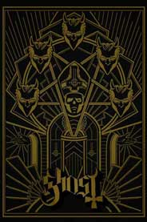
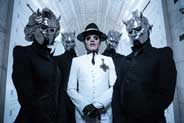
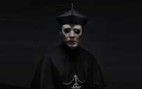
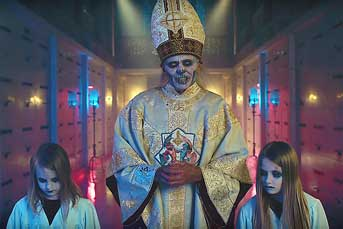
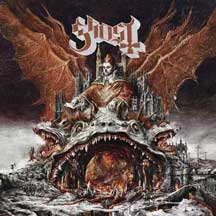
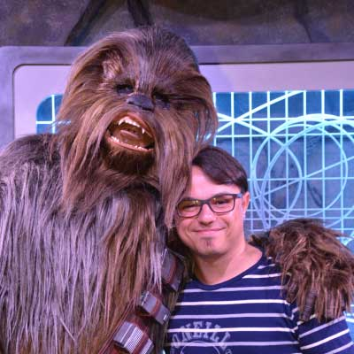

Ghost, predicando la peste y medioevo en 2018
Un repaso por la banda sueca que hizo de su estrafalaria imagen su sello personal y que está presentando a su nuevo líder y disco.

Ghost es una banda la cual ha dado que hablar los últimos años. Salidos a escena desde Suecia (cuna de grandes bandas de Metal y subgéneros), a través del viejo conocido MySpace, donde hizo un golpe de escena por toda la importancia de imagen, y no solo a nivel instrumental. Desde sus inicios la carrera de Ghost se construyó alrededor de riffs muy pesados y un sentido de lo teatral muy interesante, que los llevó a esconder sus rostros detrás de máscaras y disfraces relacionadas con lo medieval y lo religioso. Por su aprensión al espectáculo visual, dentro del mismo ambiente algunos de sus colegas no los consideran verdaderos exponentes del Heavy Metal. Pero lo cierto es que además de tener el peso necesario para ser parte del género, también han sabido mostrar una versatilidad que por momentos los coloca en un piso hasta superior a donde se encuentran las bandas más directas y lineales. 1
Ya consolidados en el mundo musical, no sin controversias de por medio, es la primera vez que en la representación de máxima autoridad de la banda tenemos a un cardenal y no un papa. Como dijo uno de los músicos, llamados “Nameless Ghouls”, “el nuevo cardenal tiene que ganarse su pintura de papa”. O sea, para ser un verdadero Papa Emeritus, tiene que mostrar de que material está hecho. No es fácil difundir “la palabra” con alguien débil o que no tenga un carisma atrayente.
¿La peste en 2018?

El primer paso que tuvo nuestro Cardinal Copia es el single RATS, de su próximo disco Prequelle. Un tema distinto a lo acostumbrado por la banda, pero que a la vez demuestra seguir esa línea de impredecibilidad que tiene su sonido y estilo.
Tenemos una idea de Prequelle y de que va de la mano del mismo Cardinal Copia, el cual comenta: Es un disco centrado en las épocas medievales pero que tiene conexión con muchos aspectos de la actualidad.

Ok, entendemos. Pero.. ¿peste negra en 2018? Veamos que tiene para decirnos Copia: “La peste negra es un gran ejemplo de lo que es un punto de cambio para toda una civilización. Aldeas enteras fueron eliminadas. La gente tenía muy poca información y para ellos era todo obra de Dios o el Diablo. Mucho de lo que pasó hoy se podría reconocer en la actitud de la gente en las redes. En muchas maneras, hemos dado varios pasos atrás porque ahora todo es como en los viejos tiempos cuando la gente estaba en una plaza y de golpe pasa como en “Monthy Python’s Life of Brian”. “Apredeadlo!”. Los juicios públicos están poco supervisados y son muy rápidos y le hablan a la parte más primordial de nuestro ser”2
Ghost sigue entonces con su cruzada de conquistar el mundo a partir de la música. Con un Cardinal Copia que no es del agrado del supremo Papa Emeritus Zero, comienza esta nueva etapa -según definió 3 Zero en italiano cuando sacó del escenario al carismático Papa Emeritus III- YO SOY PAPA EMERITUS ZERO. LA FIESTA SE ACABÓ Y AHORA UNA NUEVA ERA INICIARÁ. ¡LA EDAD MEDIA COMIENZA AHORA!.
Papa Emeritus Zero

¿Quién es el renombrado y cabecilla Papa Emeritus Zero? Es, básicamente, el que comanda el Clero de Ghost. El líder de ese plan de conquista mundial y que ha usado a usos hijos, Emeritus I, Emeritus II y Emeritus III como los medios para llegar a lograrlo. Para ponerlo en una línea de tiempo, es el antecesor del Papa de el primer disco de la banda Opus Eponymous que se presentó en 2010. ¿Podríamos decir que fue el que subió el tema a MySpace? Sí, podría ser. Con Ghost es todo un signo de interrogación gigante.
Zero salió a escena el pasado 30 de septiembre de 2017, cuando en pleno Monstrance Clock, el adorado Emeritus III fue sacado a la fuerza por seguridad mientras entraba en escena un anciano pero intimidante Zero, d´nde desplegó las palabras citadas más arriba. Cabe decir que Emeritus III no corrió buena suerte, lo cual confirma que Zero es capaz de lo que sea para lograr su propósito.
Prequelle
Entonces, ¿cómo será el mensaje a transmitir por la banda? Ya sabemos que Rats es una de las melodías que lo hará, aunque hay teorías sobre que Rats habla de el problema legal que tuvo el fundador de Ghost con ex-miembros (ver teoría). Más allá de eso y si es por los ex-integrantes o por el venidero apocalípsis de la peste, compartimos con ustedes el arte de tapa del disco y el tracklist del mismo, para poder ir anticipando este oscuro mensaje que tiene preparado Cardinal Copia (¿futuro Papa Emeritus IV?) y sus Nameless Ghouleh y Nameless Ghouls.
Setlist:

- 'Ashes'
- 'Rats'
- 'Faith'
- 'See The Light'
- 'Miasma' (Instrumental)
- 'Dance Macabre'
- 'Pro Memoria'
- 'Witch Image'
- 'Helvetesfonster' (Instrumental)
- 'Life Eternal'
- 'It's a Sin' (Cover de Pet Shop Boys / vinilo edición limitada)
- 'Avalanche' (cover de Leonard Cohen / vinilo edición limitada)
Volver
Sobre el autor:

Soy Juan Manuel Palma, JuanMa para los amigos. Nacido un día de la madre el 18 de octubre de 1987, dame auriculares con buena música y puedo ir hasta el fin del mundo. Amigo personal de Chewbacca y sobreviviendo en un mundo muggle. ¿Querés contactarme? hacelo a mi correo electrónico. Curso actualmente DW, 1B, TN
Volver